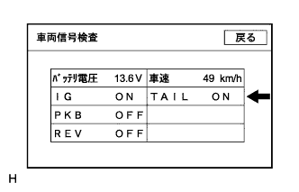

HDD Navigation System Screen does not Dim or Switch to Night Mode when Lights are Turned On |
)| Step 1 | Inspect Image Quality Adjustment Screen |
Check Settings
Press the "PICTURE/OFF" switch on the navigation receiver assembly to display the "Picture Quality Adjustment" screen.
Turn the headlight dimmer switch to TAIL.
Check the "Day Mode" setting.
| Result | Proceed to |
|---|---|
| Not set to "Day Mode" | A |
| Set to "Day Mode" | B |
|
| ||||
| A | |
| Step 2 | Vehicle Signal Check |
 |
Check Vehicle Signal
Start the diagnosis and display the Service Inspection screen. (see)
Select "Vehicle Signal Check" from the "Function Inspection/Adjustment" screen.
Check the TAIL signal condition when the headlight dimmer switch is turned "OFF → TAIL".
| Headlight dimmer switch | Display |
|---|---|
| OFF | OFF |
| TAIL | ON |
| Result | Proceed to |
|---|---|
| Does not operate normally when the dimmer switch is operated | A |
| Operates normally when the dimmer switch is operated | B |
|
| ||||
| A | |
| Step 3 | Inspect Wire Harness and Connector (ILL+) |
Voltage Inspection
Disconnect connector A of the navigation receiver assembly.
Using SST (Toyota electrical tester), measure the voltage between the navigation receiver assembly vehicle side wire harness connector terminal and body ground.
| Tester Connection (Terminal Symbol) | Condition | Standard |
|---|---|---|
| A10 (ILL+) - Body ground | Headlight dimmer switch TAIL | 11 to 14 V |
|
| ||||
| OK | ||
| ||